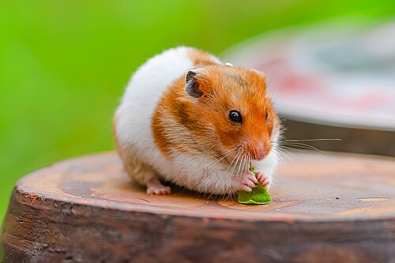

Hamsters are rodents (order Rodentia) belonging to the subfamily Cricetinae, which contains 19 species classified in seven genera.[1][2] They have become established as popular small pets.[3] The best-known species of hamster is the golden or Syrian hamster (Mesocricetus auratus), which is the type most commonly kept as a pet. Other hamster species commonly kept as pets are the three species of dwarf hamster, Campbell's dwarf hamster (Phodopus campbelli), the winter white dwarf hamster (Phodopus sungorus) and the Roborovski hamster (Phodopus roborovskii),
hamsters are cool.